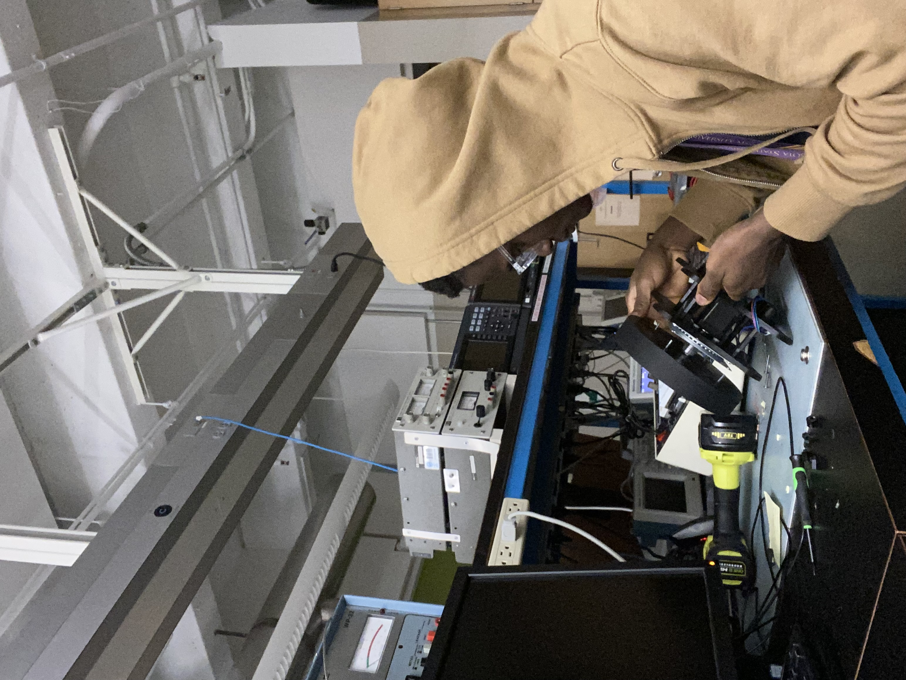
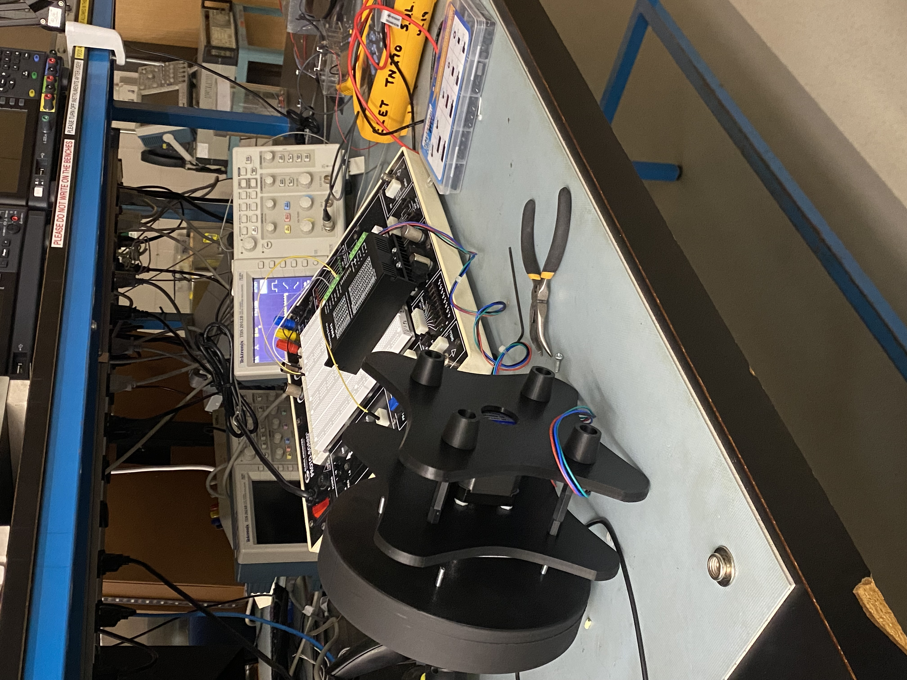
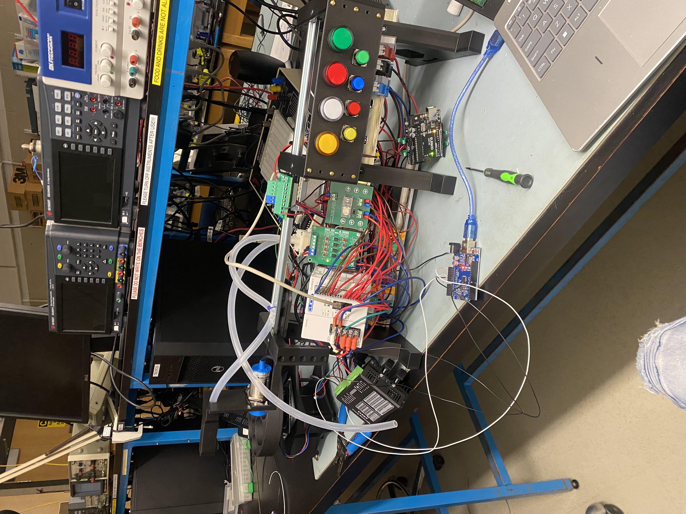
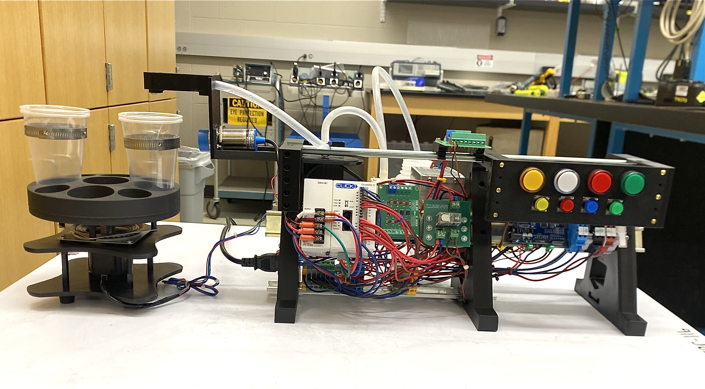
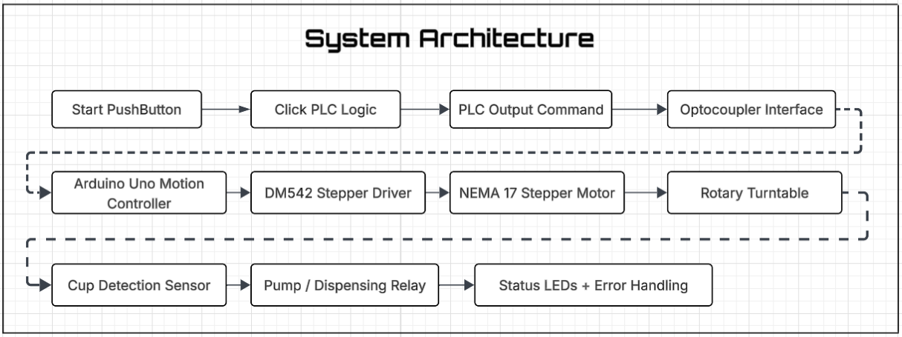
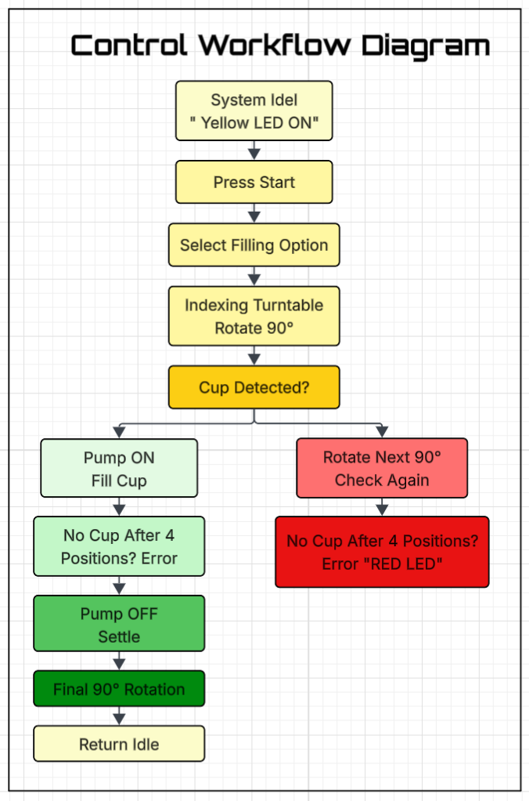
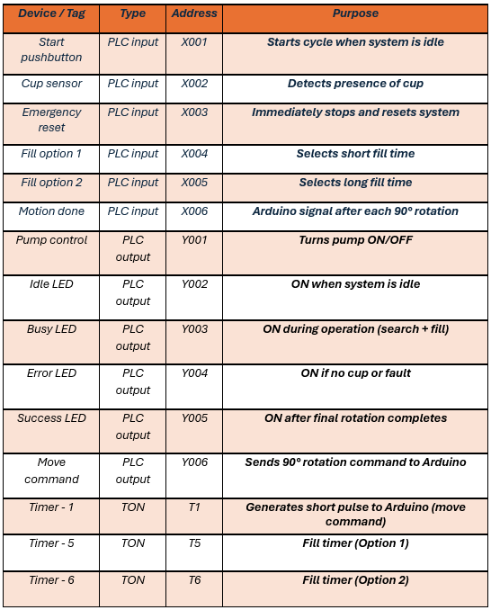

Industrial Automation • PLC Control • Mechatronics
Automated Drink Filling and Indexing System
Designed a PLC-controlled automated filling system that rotates a turntable, detects cup presence, activates a pump, and uses feedback signals to manage idle, busy, complete, and error states.
Problem
Manual filling depends on operator timing, cup placement, and repeated human action.
Solution
Automated the process using PLC sequencing, rotary indexing, timed dispensing, and sensor feedback.
Result
Created a repeatable fill cycle with 90° indexing, cup detection, and fault handling.
Architecture for Automated Drink Filling System

System Control Flowchart

I/O & Timer Prototype Mapping

Applied Engineering Skills:
Modern Industrial Automation
Ladder Logic & C++ Programming
Electrical Power Distribution
Mixed-Signal Interfacing
Software and Hardware Algorithms
Prototype Development
PCB Design & Fabrication
Hardware Testing, Troubleshooting & Validation
Tools and Technology:
PLC
C++
Capacitance Proximity Sensors
Prototype PCB
DC Pump
Power Supply
Multimeter